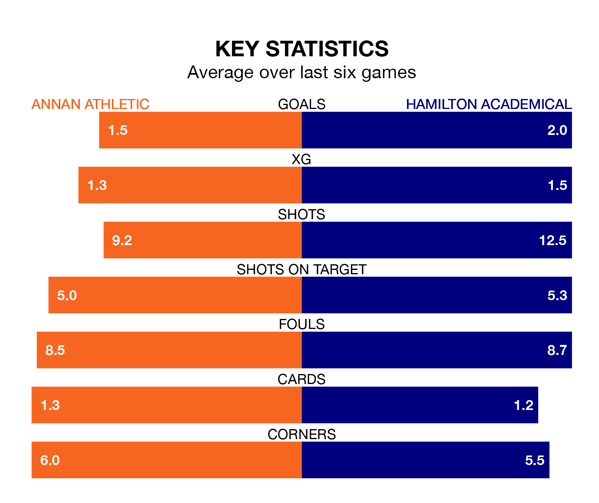

Relegation candidates Annan Athletic face a challenge against high-flying Hamilton Academical at Galabank on Saturday.
Annan Athletic are ninth in the League One table, and have picked up seven wins and 10 draws in their 31 games to date.
The Accies, meanwhile, are second in the standings with 62 points, having won 18 and drawn eight, and are 19 points behind table-toppers Falkirk.
With 63 goals in 31 games so far this season, Hamilton Academical are the league's second-highest scorers with 2.0 goals per game. And they are conceding fewer than average, letting in 23 goals at a rate of 0.7 per game.
Annan, meanwhile, are below average scorers, with 1.4 goals per game, compared to a league average of 1.6. They have conceded 1.9 goals per game.
In Kevin O'Hara, the Accies have one of the league's sharpest shooters so far this season. He has notched 13 goals in 31 appearances, to sit third in the scoring charts.
His goal rate of one every 188 minutes is quicker than that of Thomas Goss, Athletic's top scorer with a goal every 238 minutes, and a total of nine goals in 27 games.
The Galabankies are in mixed form in League One, with two wins and three draws from their last six games.
With four wins and two draws over that period, the away team's form is better – they have taken 14 points from 18, compared to the hosts' nine.
In the last five years, Annan and Hamilton Academical have played each other on four occasions. They won two each.
On average, the Galabankies scored 1.8 goals and the Accies 2.5 in those matches.
Their last meeting was on February 10, when Annan won 3-2 away.
Annan's last match was on Saturday, a 1-1 draw against Alloa Athletic, with Tommy Muir getting the goal for the Galabankies.
Hamilton Academical drew 0-0 with Queen of the South last time out, also on Saturday.
Updated: 10:31 (UTC), 31/03/24